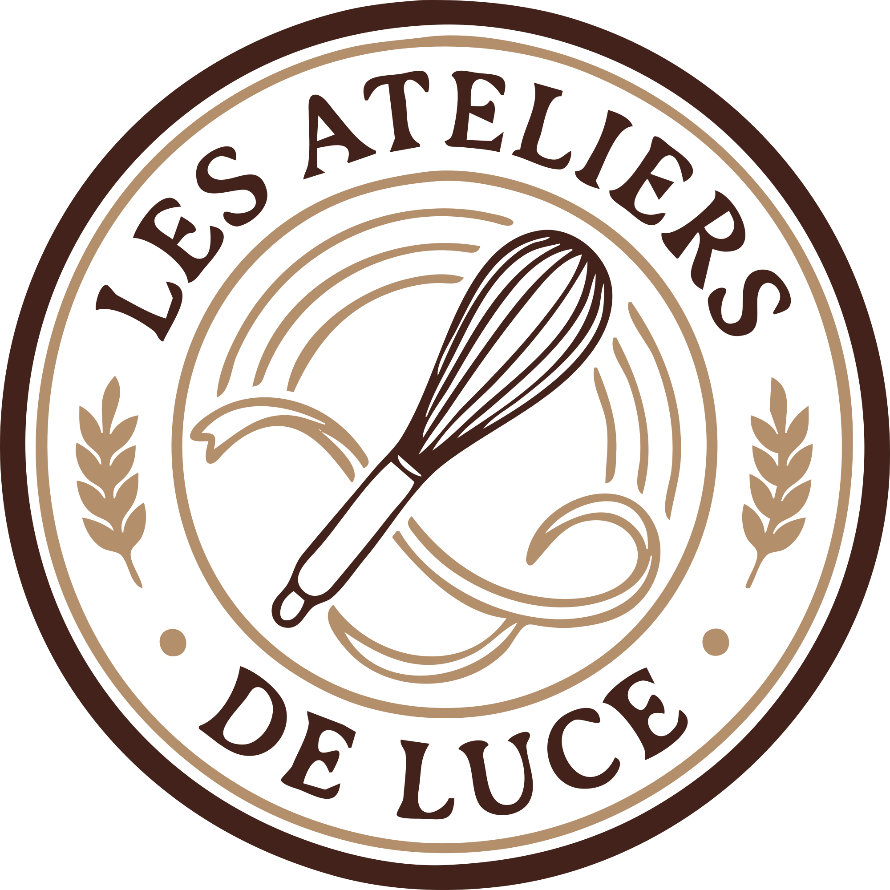

Expression
Chacun participe à son rythme et selon ses moyens.
Ateliers de pâtisserie solidaires
Une expérience de médiation culinaire qui réunit entreprises, associations et structures médico-sociales autour d'une réussite commune.

Salariés comme personnes accompagnées peuvent manquer d'espaces pour se rencontrer, s'exprimer et se sentir valorisés. Pourtant, les entreprises cherchent des actions RSE utiles, et les structures sociales des expériences qui créent réellement du lien.
La problématique est donc simple : comment réunir ces publics autour d'une expérience accessible, concrète et porteuse de sens ?
Chacun participe à son rythme et selon ses moyens.
Une réalisation concrète devient une petite victoire.
Chaque rôle compte et est reconnu dans le groupe.
Un moment partagé qui favorise l'entraide et la communication.
Je conçois des ateliers de pâtisserie solidaires où collaborateurs et personnes accompagnées réalisent ensemble une recette, dans un cadre sécurisant, inclusif et convivial. Ici, la pâtisserie est un prétexte pour coopérer, changer les regards et repartir avec une réussite commune.

Une action RSE concrète pour renforcer la cohésion, la QVT ou fédérer une équipe autour d'un projet utile.
Une activité adaptée aux besoins des personnes accompagnées, qui favorise la participation et crée une rencontre différente.
Un atelier préparé et animé par une éducatrice spécialisée et pâtissière, attentive aux relations, aux rythmes et à la place de chacun.
Une expérience clé en main, adaptable au public, au groupe et à vos objectifs, avec une réalisation à partager et un impact humain visible.
Les Ateliers Gourmands de Luce utilisent la pâtisserie pour faire vivre des valeurs concrètes, dans une expérience accessible et adaptée aux différences.
Chaque atelier est conçu pour répondre à des objectifs humains autant que gourmands. Les formats peuvent être adaptés au contexte, au public et à la taille du groupe.
Créer un moment de partage entre collaborateurs et bénéficiaires d'une association.
Objectifs : coopération, confiance, convivialité, rencontre.
Les équipes relèvent un défi culinaire où la réussite dépend de la coopération, de la communication et de la répartition des rôles.
Objectifs : renforcer la cohésion, développer l'entraide, favoriser l'inclusion.
Les participants réalisent ensemble des biscuits, gâteaux ou douceurs ensuite offerts à une association, un foyer ou une maraude.
L'entreprise vit une expérience solidaire ayant un impact concret.
Un accompagnement tout au long de l'année autour de différentes thématiques.
Thématiques : cohésion de rentrée, Noël, printemps, ateliers avec une association partenaire.
Un moment gourmand, convivial et fédérateur, adapté au contexte de votre événement.
Exemples : anniversaire adultes et enfants, EVJF, baby shower, fêtes de fin d'année, célébrations diverses.


Éducatrice spécialisée depuis 9 ans et passionnée de pâtisserie, j'ai fondé Les Ateliers de Luce pour réunir ces deux univers qui me sont chers.
Plus qu'un atelier de pâtisserie, je propose une expérience de médiation culinaire.
J'apporte un regard professionnel centré sur les relations humaines, les dynamiques de groupe et l'inclusion de chacun. Cette double compétence me permet de concevoir et d'animer des ateliers où chaque participant trouve sa place, dans un climat bienveillant favorisant l'engagement, la coopération et la confiance.
Une question, un projet d'atelier ou une opportunité de collaboration ? N'hésitez pas à me contacter par e-mail. Je vous répondrai avec plaisir.